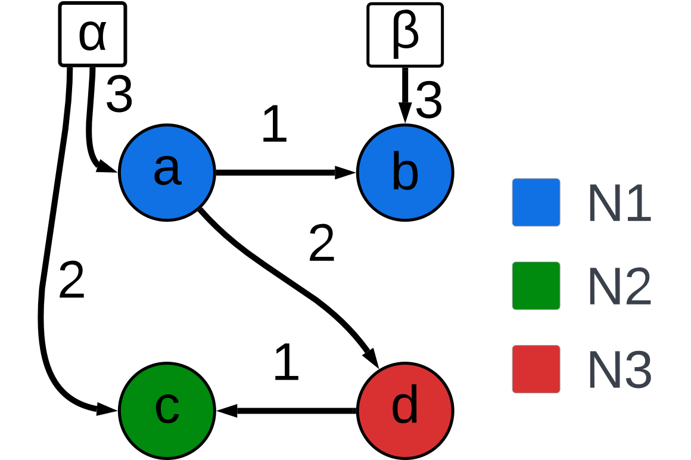

Note
Go to the end to download the full example code.
Creating a Network#
This example walks through how to create a simple network and run it in the software simulator

Importing the necessary libraries#
First import the CRI network class from the the hs_api library and import the leaky integrate and fire neuron model from the neuron models collection.
from hs_api.api import CRI_network
from hs_api.neuron_models import LIF_neuron
Defining a neuron model#
HiAER-Spike supports specifying different models for different neurons. A set of model classes are provided. Currently only variants of the integrate and fire and memoryless integrate and fire model provided by the LIF_neuron class and ANN_neuron class respectively are supported LIF_neuron models have 3 parameters
theta(\(\theta\)): determines the membrane potential at which the neuron spikes and the potential is reset to zero
nu(\(\nu\)): controls the magnitude of random noise added to the membrane potential at each step.
lambda(\(\lambda\)): controls the voltage leakage that occurs during each timestep. \(v=v-v/2^{leak}\)
Neurons a and b belong to neuron model N1, neuron c belongs to neuron model N2, and neuron d belongs to neuron model N3.
N1 = LIF_neuron(theta = 3, nu = -17, Lambda = (2**6)-1)
N2 = LIF_neuron(theta = 4, nu = -17, Lambda = 2)
N3 = ANN_neuron(theta = 5, nu = 2)
Defining the axons dictionary#
Axons represent incoming synapses to the network. Each axon has one or more postsynaptic neurons. Users can manually send spikes over axons at each timestep
axons = {'alpha': [('a', 3),('c', 2)],
'beta': [('b', 3)]}
Defining the neurons dictionary#
The neurons dictionary defines the neurons in the network and the synapses between them. Each neuron may have synapses to zero, one, or many postsynaptic neurons and must have a model specified by providing a neuron model object. Keys in the connections and axons dictionaries must be mutually exclusive
neurons = {'a': ([('b', 1), ('d', 2)], N1),
'b': ([], N1),
'c': ([], N2),
'd': ([('c', 1)], N3)}
Defining the outputs List#
The outputs list defines the neurons in the network that the user wishes to monitor for spikes. Each element in the list is the key of a neuron in the connections dicitonary
outputs = ['a', 'b']
Initializing a Network#
A CRI network object must be contructed using the prevoisly defined dictionaries and list.
network = CRI_network(axons=axons,connections=connections,outputs=outputs)
Running a timestep#
The step method executes a single timestep of the network. Inputs may be provided for each timestep in the form of a list of axons to send spikes over dat the given timestep. A list of spikes is always returned. Optionally the membrane potential parameter can be set to true to return membrane potentials for all neurons in the network.
inputs = ['alpha','beta']
currSpikes = network.step(inputs)
# Alternative
# potentials, currSpikes = network.step(inputs, membranePotential=True)
print(currSpikes)
Updating Synapses#
Network topologies are frozen at object creation, but the weights of existing synapses may be altered.
currWeight = network.read_synapse('a', 'b')
network.write_synapse('a', 'b', 2)